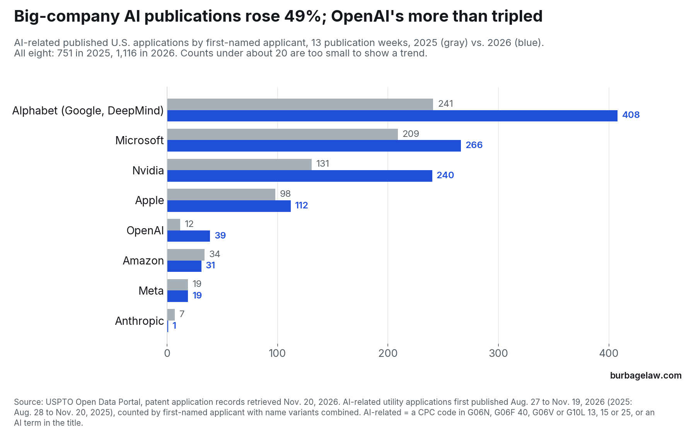
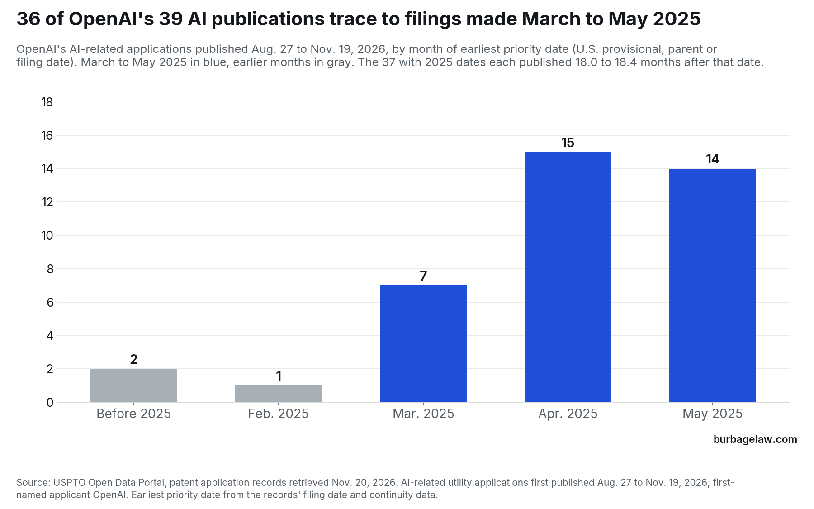

Data · Who is filing on what, edition 7
Big-company AI patent publications rose 49% from a year earlier, and OpenAI’s more than tripled
AI-related U.S. applications published from August 27 to November 19, 2026 that name OpenAI, Anthropic, Alphabet, Microsoft, Nvidia, Meta, Amazon or Apple as first applicant, against the same 13 weeks of 2025.
Listen · Thinking Makes It So, 2026-11-20 · 6 min
All episodes · Subscribe: Apple Podcasts · Spotify
The short version
The eight large AI companies this series follows published 1,116 AI-related U.S. patent applications in the 13 weekly publication dates from August 27 to November 19, 2026, against 751 in the same weeks of 2025, a rise of 49%. Alphabet went from 241 to 408, Nvidia from 131 to 240 and Microsoft from 209 to 266. Apple rose from 98 to 112. OpenAI went from 12 to 39, more than three times its count a year earlier.


That is roughly the pace of the field. Publications classified in G06N, the class usually used to count AI patents, rose 48% over the same weeks, from 4,064 to 5,998, while all published utility applications rose 34%. The big filers are growing with the class, not pulling away from it.
Six weeks after the first scoreboard
Edition 1 counted the same eight companies in the 13 weeks ending October 8. That window shares seven weeks with this one, so the two are not independent, but the direction holds. The eight together went from 950 to 1,116, Microsoft from 213 to 266, Apple from 81 to 112 and OpenAI from 24 to 39. Amazon held at 31. Meta and Anthropic publish too few AI-related applications for their movements to mean much.
Where the increase came from
Continuations and divisionals account for 188 of the 365 additional publications: 431 this year against 243. Nvidia’s went from 41 to 119, spread across 117 different parent applications rather than one family. National stage entries of international applications rose from 40 to 141, mostly Alphabet’s (29 to 114). Edition 6 looked at Alphabet’s national stage jump and could not find its cause.
Titles that name an agent or an agentic system rose from 27 to 56. Seven of last year’s 27 were Anthropic applications published on a single day, September 25, 2025; for the other seven companies the rise is from 20 to 56. Microsoft has 22 this year, Alphabet 19 and Nvidia 9.
Why OpenAI’s count tripled
OpenAI did not change how it publishes. Each of its 37 publications with a 2025 priority date came out 18.0 to 18.4 months after that date, the ordinary schedule under 35 U.S.C. 122(b), and none came out early. What changed is how much it filed 18 months ago: 36 of the 39 trace to first filings made in March, April and May 2025. Last year’s 12 traced mostly (10 of 12) to filings made in February and May 2024.


Of the 39, 18 claim a U.S. provisional, 12 are continuations and 9 claim no earlier application. Polsinelli PC is the firm in the correspondence address on 32, Keller Preece PLLC on 5 and Finnegan on 2. They name 110 different inventors, against 28 on last year’s 12. The largest week, October 8, held 11, and three publication dates (October 8, November 5 and November 19) held 24 of the 39. The subjects track OpenAI’s products. Six published on November 19 concern automated software development with a “generative response engine,” and others cover real-time voice with interruption detection, a memory platform, safety classifiers for audio output and monitoring a model’s chain of thought for reward hacking.
My reading is that this is a filing decision made in early 2025 now surfacing on the 18-month clock. OpenAI has not said why it filed more that spring, and the cause is not known. Its published patent policy pledges to use its patents only defensively, unless a party threatens or sues it, helps others do so, or otherwise harms it or its users.
G06N still misses close to half
Across the six companies with at least 20 AI-related publications, 510 of 1,096, or 47%, carry no G06N code. They sit in language processing (G06F 40), vision (G06V) or speech (G10L), or count as AI-related by their titles. For Apple the share is 81%, for OpenAI 67%. Edition 1 found 44% across seven companies.
What it means for in-house counsel
It would be easy to read a tripled count as a company that started patenting this fall. I think that gets the timing wrong, and the timing matters. A published application is prior art for what its earlier filing describes as of that earlier filing date, not its publication date, under 35 U.S.C. 102(a)(2) and 102(d). For most of OpenAI’s 39, that date is in spring 2025. If you are prosecuting an application on coding agents, voice assistants or model monitoring with a later priority date, expect these publications to start appearing in office actions. OpenAI’s defensive pledge does not change that; it limits how OpenAI says it will enforce its patents, not what its publications disclose.
The same clock means an application first filed after about May 2025 that claims no earlier date is generally still unpublished, unless its applicant asked for early publication. If you commission a novelty search on agent or coding-assistant technology before filing, consider that it cannot reach those applications, and weigh that gap in the filing decision the search supports. When performing a search, search by class, not by keywords alone, and include G06F 40, G06V and G10L along with G06N: G06N alone would have missed 47% of these publications.
Method
Data: USPTO Open Data Portal, patent application records, retrieved November 20, 2026. The windows are the 13 weekly publication dates from August 27 to November 19, 2026, and from August 28 to November 20, 2025, by first publication date.
A publication counts as AI-related if it carries a CPC code in G06N, G06F 40, G06V, or G10L 13, 15 or 25, or if its title uses an AI term such as “machine learning,” “neural network,” “language model” or “generative.” This is the same rule as edition 1.
Companies are counted by first-named applicant only, with name variants combined after a wildcard and fuzzy-match search for misspellings (one misspelled Microsoft record was added to 2025). Alphabet includes Google LLC, GDM Holding LLC and DeepMind Technologies Limited. Each application is counted once; application and publication numbers are unique in both windows. Agent counts are title matches on “agent” or “agentic” and exclude one Alphabet chemistry application about nucleating agents.
Filing route comes from each record’s continuity and priority data: continuation, continuation-in-part or divisional; national stage; a U.S. provisional; foreign priority; otherwise none. The earliest priority date is the earliest of the record’s filing date and the filing dates of every parent, provisional and foreign application it claims. Months are days divided by 30.4375. The firm is the name in the record’s correspondence address. Two OpenAI publications (US 2026/0268214 and US 2026/0310729) were checked against Justia for applicant, title and dates.
G06N market counts are all published utility applications with a G06N code, by week, from the same source. Edition 1’s figures are as published on October 13, 2026. Counts under about 20, including Meta and Anthropic, are small and should not be read as trends.
Source: USPTO Open Data Portal · OpenAI, approach to patents (patent pledge) · Justia Patents, US 2026/0310729 (OpenAI, memory platform) · Burbage Law data series, edition 1 · Burbage Law data series, edition 6
Data and citation
You may quote, chart and republish these figures with a citation to this page. Suggested citation:
Jon Burbage, Big-company AI patent publications rose 49% from a year earlier, and OpenAI’s more than tripled, Burbage Law: Who Is Filing on What, ed. 7 (Nov. 20, 2026), https://burbagelaw.com/data/2026-11-20-openai-ai-publications-triple.html
← All data editions · Developments
Burbage Law is the practice of Jon Burbage, a registered patent attorney. 342 United States patents have issued from applications he wrote; the full list is on the Patents page. More about Jon Burbage.
These figures are computed from public USPTO records as described above. They are general information, not legal advice, and do not create an attorney-client relationship.